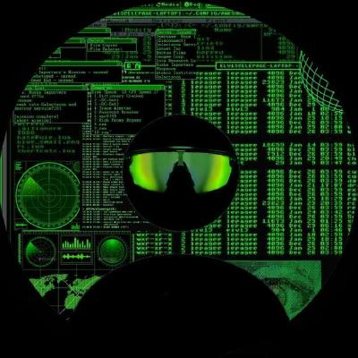

FailBench: How Reliable are VLMs at Judging Robot Task Success?
Evaluating whether vision-language models can tell when a robot succeeds or fails, across 2,197 manipulation attempts from 14 sources.
AI Research Engineer at Metric AI Lab, Yerevan
I work on embodied AI, robotics, and multimodal learning.

Evaluating whether vision-language models can tell when a robot succeeds or fails, across 2,197 manipulation attempts from 14 sources.
Building and evaluating a legal assistant for Uzbek, with targeted retriever fine-tuning for cloud and on-premises deployment.
BSc in Artificial Intelligence